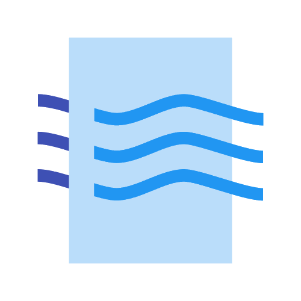

Après de toutes premières mesures dans les années 60,
c’est en 1973-1974 que se sont créés les premiers
réseaux de mesure de la pollution de l’air,
qui ont fusionné au fil des années pour devenir l’association
AirPur.
AirPur se place au service de l’intérêt général et s’attache à respecter le caractère factuel des données,
la neutralité dans l’interprétation et la diffusion des résultats, sans parti pris.
Quelques chiffres :
Plus de 720 stations de mesure fixes et mobiles sont implantées dans des lieux représentatifs
(urbain, périurbain, rural) de différents types de pollutions
(trafic routier, industrielle, de fond) en France.
Ces stations de mesure fonctionnent en continu 24h/24, 7j/7.
Elles accueillent différents appareils d'analyse de concentrations de polluants réglementés ou non.
Certains polluants sont suivis en temps réel,
d’autres font l’objet de prélèvements et d’analyses différées en laboratoire.

Quel est notre objectif ?
Notre objectif à toujours été de rendre la qualité de l'air meilleur,
et c'est pour cela que nous nous engageons a mettre en service tout ce qui est en notre pouvoir
pour rendre l'air moins pollué et qu'elle puisse être respirée par tout le monde sans soucis.
Nous mettons donc en oeuvre des stations, des sites,
des moyens de déplacement qui prend en charge tout ce qui pourrait être bon pour tous.